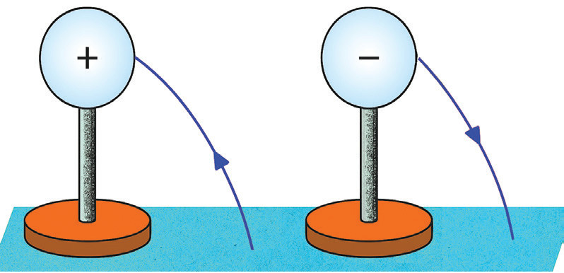

2. Identifying the insulating properties of materials
An electroscope that is positively charged can be used to test for the insulating properties of materials. If the material that is placed near the cap of an electroscope is a conductor, then the metal leaf collapses. If the material being tested is an insulator, the leaf electroscope retains its charge, and the leaf remains raised.
3. Detecting the presence of charge on a body
When a charge is induced on the leaf electroscope by a charged body, the leaf diverges. When the charged body is removed, the leaf collapses, indicating that the induced charge on the electroscope is temporary and due to the charged body.
Electrostatic potential
You have learnt that like charges repel each other, and unlike charges attract each other. Therefore, work must be done to overcome the repulsive force in moving a positive charge towards another positive charge. Likewise, work is done to overcome the attractive force to move a negative charge away from a positive charge. The above processes apply to all points in the region surrounding any charges. This means an electrostatic force field around a charge exists. The work required to move a unit charge from a reference point to a specific point against the electrostatic force field of another charge is called the electrostatic potential at the specific point. Therefore, there is a difference in electrostatic potential between any two points in the electrostatic force field.
Potential of a charged body
A charged body is considered to be at a positive potential if, upon grounding, electrons flow from the earth to the body. Similarly, if electrons move from the body to the earth upon contact, the body is at a negative potential. This electron flow continues until the body’s potential matches that of the Earth, which is defined as zero potential as indicated in Figure 1.24. Therefore, any grounded conductor is considered to be at zero potential by definition.

Potential difference (p.d.) refers to the work required to move a charge between two points with different electric potentials, measured in volts (V). The volt is named after the Italian physicist Alessandro Volta, where one volt equals one joule of work per coulomb of charge. In a leaf electroscope, leaf divergence occurs due to this potential difference between the leaf and the cap. When a negatively charged conductor is grounded, negative charges flow from it